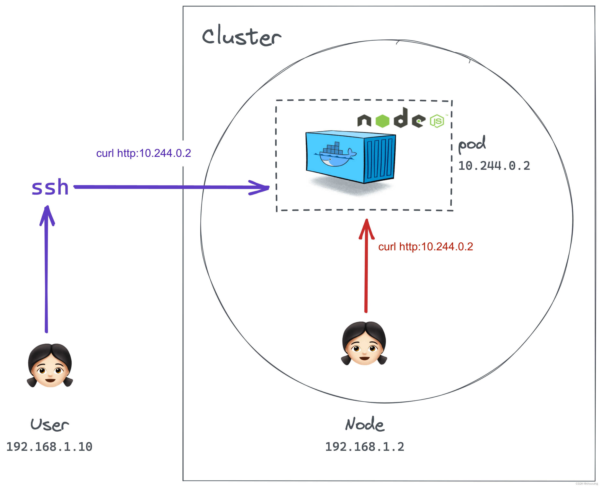
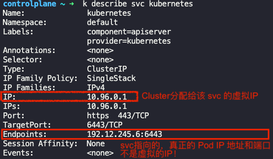

6.服务与网络
1. 服务（Service）¶
Service vs Route
The Service will expose your application internally within the cluster, and the Route will create a publicly accessible URL for external access.
为什么需要Service？¶
Kubernetes中的每个Pod都有它自己的IP地址，但Pod经常会因为各种原因而挂掉，如果我们用Pod的IP地址来访问该Pod，会常出现IP地址无效的情况，我们用 服务（Service） 解决这个问题。服务（Service）提供了稳定的IP地址，我们永远可以找到服务（Service）的IP地址，然后通过该服务（Service）访问到想要找的应用Pod。
为了更好的理解，我们看一下如果 服务不存在 ，用户可以怎么访问Pod中的应用：
方法一： 如果用户本身在Cluster内部，可以直接通过curl http:10.244.0.2访问应用
方法二： 如果在Cluster外部，可以通过 ssh 来访问curl http:10.244.0.2

Cluster外部对应用的访问会更方便。服务（Service）相当于一个虚拟服务器，有自己的IP地址（这里是10.106.127.123）。
这里我们不再需要 ssh ，而是直接访问Node所在的ip地址192.168.1.2（⚠️用户本身的电脑IP和Node的IP是在同一个网络里面的，即IP地址中的前三部分时相同的，所以我们才能直接访问到Node得IP），
入口则使用Service提供的端口（30080），比如使用curl 192.168.1.2:30080

查看服务：
k get services
# 或
k get svc
NAME TYPE CLUSTER-IP EXTERNAL-IP PORT(S) AGE
kubernetes ClusterIP 10.43.0.1 <None> 443/TCP 7m30s
myapp-service NodePort 10.106.127.123 <None> 80:30008/TCP 30s
Info
kubernetes服务是k8s在启动时创建的默认服务。myapp-service服务是我们创建的，现在作为用户可以通过curl http://192.168.1.2:30008直接访问到前端App了！- PORT(S)中代表的是：
<ServicePort>:<NodePort>/<Protocol> targetPort不会显示在oc get svc结果中ClusterIP（集群内的虚拟 IP），集群内的 Pod 通过此 IP 访问 Service
语法：三个ports¶
# Service with NodePort
apiVersion: v1
kind: Service
metadata:
name: my-nodeport-service
spec:
type: NodePort
selector:
app: my-app
ports:
- protocol: TCP
port: 80
targetPort: 8080
nodePort: 30007
port- Service 自己的 Port
- 服务本身的端口
- 服务自己的port就简单地叫
port - ✅ 必写，否则会报错
targetPort
- 应用程序的实际端口（Pod的端口）
- 是服务的目标，所以叫
target - 🚫 可选，如不写明，默认与
port值相同
nodePort- Node的端口，是外部访问服务的端口（集群外）
- 🚫 可选，如不写明，k8s会提供任意一个在 [30000, 32767] 范围内可用的端口
如图，外部的访问者只需要知道Node的IP地址（192.168.1.2），和Node开放的Port（30007）就行了
service.spec.ports
.spec.ports容纳的是一个数组，意味着一个服务可开放 多个端口，用于与不同的App进行沟通
- ⚠️ 注意：如果有多个端口开放，那么
Service的每个端口都必须有一个名称
使用场景:
- 多协议服务（如 HTTP + gRPC）- L7 应用层协议
这里的 HTTP 和 gRPC 都是基于 TCP 的应用层协议。它们 使用不同的端口，但都是 TCP，例如：spec: ports: - name: http port: 80 targetPort: 8080 - name: grpc port: 50051 targetPort: 50051 - TCP + UDP - 例如DNS服务 - L4 传输层协议
这里涉及 不同的传输层协议，即 TCP 和 UDP，所以必须分开声明spec: ports: - name: dns-tcp port: 53 targetPort: 53 protocol: TCP - name: dns-udp port: 53 targetPort: 53 protocol: UDP - 同时提供多个版本的 API
spec: ports: - name: api-v1 port: 8080 targetPort: 8080 - name: api-v2 port: 9090 targetPort: 9090 - Service 代理多个不同的 Backend 端口. 一个 Pod 运行多个进程，每个进程监听不同端口（如 Web + Metrics）。
spec: ports: - name: web port: 80 targetPort: 8080 - name: metrics port: 9090 targetPort: 9090
Info
.spec.selector指定targetPort属于哪一个Pod，上面例子中绑定了一个labels中有app=myapp的Pod。- 很多情况下，一个前端App会有多个replicas，但因为他们都有相同的
labels，他们会自动被service找到！
- 很多情况下，一个前端App会有多个replicas，但因为他们都有相同的
targetPort是Pod而不是Container！因为Pod中的所有Container是共享网络的，所以用同一个Pod端口
服务的端点（Endpoint）
Service中有一个Endpoint，这个Endpoint是 该Service 指向的 真正的 Pod IP 地址和端口
查看Service细节:
k describe svc <ServiceName>

IP：Cluster给 service 分配的虚拟IPEndpoints：service指向的 Pod 真正的IP， 并非虚拟！
IP地址类型¶
有两种类型：外部IP地址（external/public） 和 内部IP地址（internal/private）。一般来说，每个设备都有自己的 外部IP 和 内部IP，且一般两者不同。
-
外部IP：由你的网络供应商提供，你访问一个网页时（比如百度），百度可以看到你的外部IP地址，知道你是从哪儿来的。
# ifconfig=InterFace config curl ifconfig.me -
内部IP：是自动生成的。人如其名，只做内部使用。比如，用于在家庭网络中识别你的身份信息。
# ipconfig=Internet Protocol configuration ipconfig getifaddr en0
Note
当你使用VPN（Virtual Private Network）的时候，你的 网络地址 是被隐藏的
服务类型¶
| 服务类型 | 描述 | 比喻 | YAML |
|---|---|---|---|
ClusterIP ❗默认类型 |
默认类型，仅能在集群内部访问。比如：Frontend访问Backend 适用于：集群内部服务间通信。 |
公司内部的内线电话，外部无法拨打。 |
|
NodePort |
暴露服务到每个节点的固定端口上，通过 [NodeIP]:[NodePort] 访问。适用于：测试环境，或快速暴露服务 - 用于外部访问。 |
企业大门的访客入口，每个门有固定门牌号。 |
|
Headless |
一种特殊的 ClusterIP 配置，无负载均衡，不会分配虚拟的 ClusterIP（`clusterIP: None`），而是直接暴露后端 Pod 的真实 IP！适用于：直接访问 Pod 的场景，例如 StatefulSet 应用（如数据库）。 |
给客户直接提供员工手机号码，而非总机转接。 |
|
LoadBalancer |
通过云平台创建一个 **外部负载均衡器**， 并分配公共 IP。 适用于：Production环境中，那些需要直接对外暴露的服务。 |
- |
|
ExternalName |
将服务映射到外部的 DNS 名称，无需代理流量。 适用于：使用外部资源（如外部数据库或 API）。 |
- |
|
（1）ClusterIP类 服务¶
Danger
The name "ClusterIP" refers to the fact that this service provides a virtual IP address (ClusterIP) that is accessible only within the cluster.
💡 ClusterIP
Cluster 给 Service 分配的那个虚拟 IP 就叫做 ClusterIP
💡 可以分配给 Service 的 ClusterIP范围 在 OpenShift Cluster安装时就已经在 install-config.yaml 的 networking.serviceNetwork 被定义了。
默认类型，仅能在集群内部访问。比如：Frontend访问Backend
apiVersion: v1
kind: Service
metadata:
name: clusterip-service
namespace: default
spec:
type: ClusterIP
selector:
app: my-app
ports:
- protocol: TCP
port: 80
targetPort: 8080
Info
问：假设现在有前端后端组成的程序，而前端和后端各有自己的Replicas（复制品，为了处理较大的用户访问而存在）。访问前端1的时候，前端1的API是发送给后端的哪一个replica的呢？
答：Kubernetes的 ClusterIP服务 可以帮助我们将 Pod 分组在一起（所有的前端replicas为一组，后端replicas为另一组），并提供单个接口（即Service）来访问组中的 Pod。Pod会因为各种bug生生死死，每次重生之后拿到的IP地址还不一样，所以我们没有办法直接用Pod，因为我们不知道该去哪个IP地址找，而Service提供了稳定的IP地址。如图：

（2）NodePort类¶
Danger
The name "NodePort" refers to the fact that the service opens a specific port on each cluster node, making it accessible from outside the cluster via the node's IP and the exposed port.
暴露服务到每个节点的固定端口上，External clients can access it via <NodeIP>:<NodePort>.
NodePort 服务例子：
apiVersion: v1
kind: Service
metadata:
name: my-nodeport-service
spec:
type: NodePort
selector:
app: my-app
ports:
- protocol: TCP
port: 80
targetPort: 8080
nodePort: 30007
多Node
当Pod的replicas分布在不同的Node上时，Service会自动扩展到多个Node上，我们不需要做任何多余的操作。
curl http://192.168.1.2:30008
curl http://192.168.1.3:30008
（3）Headless类¶
Danger
The term "headless" implies that the service does not have a "head" or a centralized virtual IP address (ClusterIP). -> Instead, it directly exposes the backend pod IPs to clients.
TODO：Headless类 Service 是如何expose Pod的？
当我们想要访问指定的Pod时，例如 StatefulSet 应用（如数据库）。只要将.spec.clusterIP设置为None即可：
apiVersion: v1
kind: Service
metadata:
name: headless-service
namespace: default
spec:
clusterIP: None # Specifies headless
selector:
app: cassandra
ports:
- port: 9042 # Cassandra default port
name: cql
Info
大多数Stateful 的应用（比如数据库）来说，Pod的Replicas之间是有区别的。
比如一个MySQL的应用可以分为Master Pod和Worker Pod：
- 只有
Master Pod可以向数据库写入数据 Worker Pod只负责同步和读取数据。
那么如何才能访问到指定的Pod呢？
the headless service (defined with clusterIP: None) is responsible for creating DNS records for each individual pod in a StatefulSet. In our case we have a stateful app Cassandra:
apiVersion: apps/v1
kind: StatefulSet
metadata:
name: cassandra
namespace: default
spec:
serviceName: cassandra # Headless service name
replicas: 3
selector:
matchLabels:
app: cassandra
template:
metadata:
labels:
app: cassandra
spec:
containers:
- name: cassandra
image: cassandra:4.0
ports:
- containerPort: 9042 # Cassandra query language (CQL) port
volumeMounts:
- name: cassandra-data
mountPath: /var/lib/cassandra
env:
- name: CASSANDRA_CLUSTER_NAME
value: "CassandraCluster"
- name: CASSANDRA_SEEDS
value: "cassandra-0.cassandra.default.svc.cluster.local"
volumeClaimTemplates:
- metadata:
name: cassandra-data
spec:
accessModes: ["ReadWriteOnce"]
resources:
requests:
storage: 5Gi
the Service auto-generated these DNS for each pods:
cassandra-0.cassandra.default.svc.cluster.local
cassandra-1.cassandra.default.svc.cluster.local
cassandra-2.cassandra.default.svc.cluster.local
（4）LoadBalancer类¶
Danger
The name "LoadBalancer" signifies that this service type integrates with an external load balancer to distribute incoming traffic across the pods
LoadBalancer类Service = NodePort类Service + 发送一个 添加负载均衡器（Load Balancer） 的请求
apiVersion: v1
kind: Service
metadata:
name: loadbalancer-service
namespace: default
spec:
type: LoadBalancer
selector:
app: my-app
ports:
- protocol: TCP
port: 80
targetPort: 8080
创建服务（Service）¶
# 方法一：用yaml文件定义
k create -f my_service.yaml
# 方法二：生成service
# - port:TargetPort=8080:8080
# - 需要手动往YAML中修改`.spec.selector`
# - 自动生成了`.spec.ports.name`
k create service nodeport [ServiceName] \
--tcp=8080:8080 \
--dry-run=client \
-o yaml > service.yaml
# 方法三：暴露deployment（以生成service）
# - 需要手动往YAML中添加`.metadata.labels`
k expose deployment/[DeploymentName] \
--name=[ServiceName] \
--port=8080 \
--target-port=8080 \
--type=NodePort \
--dry-run=client -o yaml > service.yaml
2. Ingress¶
背景¶
🤔 当App在本地服务器上时，如何实现用域名 http://www.my-shop.com访问到192.168.1.2:30008 呢？
- -> NodePort类的Service暴露 Node端口 30080
- -> 192.168.1.2:30008
- -> 配置DNS服务器
- -> http://www.my-shop.com:30080
- -> 添加代理服务器 / Proxy Server
- -> http://www.my-shop.com
- -> Done!
🤔 当App在云服务器上时（比如Google Cloud Platform），如何实现呢？
- ->
LoadBalancer类的Service，不仅拥有NodePort类的功能，还向云服务器发送了一个 添加负载均衡器(LoadBalancer) 的请求 - -> 云服务器自动配置一个负载均衡器（⚠️ 负载均衡器 的价格是按“个”计算的！）
- -> 该负载均衡器会发布一个可供外部访问的IP（我们叫他
LoadBalancerIP） - -> 配置DNS服务器，指向
LoadBalancerIP - ->
http://www.my-shop.com
⚠️负载均衡器 可嵌套，比如对一个主域名下的子域名进行配置：

这些步骤都完成以后，配置SSL以使用https（而不是http）。对SSL的配置可以在多个位置实现：
- App本身层面
- 负载均衡器层面
- 代理服务器层面
上述三种配置方法，均可实现同样的功能。
救星Ingress¶
各种各样的配置，你的头现在多大了呢？Ingress就是用来帮忙解决这个令人头疼的问题的！它包括但不限于路由（包括引流到不同App，比如/shopping 和/game）和SSL配置。
Ingress组成¶
把Ingress分为两个组件：Ingress Controller和Ingress Resource。一般两者分别在不同的namespace中，特别是Ingress Controller，做为与应用无关的资源，应该被放到单独的Namespace中！
(1) Ingress Controller¶
Ingress控制器由四个资源组成：
- 负载均衡器（以Deployment的形式存在）
- ConfigMap
- NodePort类的服务
- ServiceAccount
1.一个负载均衡器¶
以一个单独软件的形式deploy到当前的cluster上。较为流行的有GCE HTTPS LoadBalancer（谷歌），Nginx，Contour，HaProxy，taefik和Istio。其中GCE HTTPS LoadBalancer（谷歌的）和Nginx由Kubernetes管理。
我们这里以Nginx为例：命名该Deployment为nginx-ingree-controller
apiVersion: apps/v1
kind: Deployment
metadata:
name: nginx-ingree-controller
spec:
replicas: 1
selector:
matchLabels:
name: nginx-ingress
template:
metadata:
labels:
name: nginx-ingress
spec:
containers:
- name: nginx-ingress-controller
image: quay.io/kubernetes-ingress-controller/nginx-ingress-controller:0.21.0
args:
- /nginx-ingress-controller # nginx程序存储在该文件夹下，所以要在运行时进入文件夹
- --configmap=${POD_NAMESPACE}/nginx-configuration # 使用CM存nginx设置，而不是直接写在当前的Deployment里面
env:
- name: POD_NAME
valueFrom:
fieldRef:
fieldPath: metadata.name
- name: POD_NAMESPACE
valueFrom:
fieldRef:
fieldPath: metadata.namespace
ports:
- name: http
containerPort: 80
- name: https
containerPort: 443
Note
所使用的镜像是一个专门用来做Ingress的nginx镜像，可以在这里找到。
2.一个ConfigMap¶
这里命名为nginx-configuration，该ConfigMap被1中的Deployment使用，用来存储和修改nginx配置，比如存储日志的路径，SSL 设置，最长等待时间等。
apiVersion: v1
kind: ConfigMap
metadata:
name: nginx-configuration
...
3.一个NodePort类型的Service¶
使Deployment nginx-ingree-controller可供外部访问
apiVersion: v1
kind: Service
metadata:
name: nginx-ingress-service
spec:
type: NodePort
ports:
- port: 80
targetPort: 80
protocol: TCP
name: http
- port: 443
targetPort: 443
protocol: TCP
name: https
selectors:
# 对应Deployment的Label
name: nginx-ingress
4.一个ServiceAccount¶
nginx Ingress还提供了额外的功能，比如监控从集群外部来的访问，并实时修改nginx配置。该操作需要正确的权限，所以我们需要一个ServiceAccount，并在Deployment中使用该SA
apiVersion: v1
kind: ServiceAccount
metadata:
name: nginx-ingress-serviceaccount
# Roles, ClusterRoles, RoleBindings...
(2) Ingress Resource¶
Ingress Resource是应用于Ingress Controller的一组规则和配置。比如：
- 对
www.my-shop.com/shopping的访问流入到Shopping App应用中，而对www.my-shop.com/game的访问流入到Game App应用中 - 或者直接从domain就开始区分，比如常见的地域区分：
www.apple.cn和www.apple.de
我们用yaml文件定义一个Ingress Resource。比如，下面这个最简单的例子，会将所有访问都导入到名为shopping-service的Service中去
# ingress_resource.yaml
apiVersion: networking.k8s.io/v1
kind: Ingress # 注意是Ingress类型
metadata:
name: ingress-rule
spec:
backend:
serviceName: shopping-service
servicePort: 80
生成Ingress Resource：
kubectl create -f ingress_rule.yaml
kubectl get ingress
设置默认backend¶
k describe ingress/ingress-rule 可以看到一个Default backend。这个名为default-http-backend的服务是当用户输入的DNS地址（即网址）和规则中任意一条都不相符的时候会被访问！所以可以手动建一个这个名字的服务，然后访问一个自定义的，更加友好的404页面
这时查看Yaml文件，该ingress大概长这样：
apiVersion: networking.k8s.io/v1
kind: Ingress
metadata:
name: ingress-resource-backend
spec:
defaultBackend: # 默认服务
resource:
apiGroup: k8s.example.com
kind: StorageBucket
name: static-assets
rules: # 规则
...
rewrite-target¶
annotations:
# the `/` is the path that replaces the original path
nginx.ingress.kubernetes.io/rewrite-target: /
举例
当某个Ingress提供对多个应用的访问，比如：
/frontend->frontend-service->frontend-react-app/dashboard->dashboard-service->dashboard-power-bi-app
http://example.com/frontend/home会被重新成http://example.com/home。
而frontend-react-app软件本身提供的页面是没有子域名的，也就是说，如果我在本地跑react软件，能访问到的页面是localhost:3000而不是localhost:3000/frontend，所以需要“rewrite”
Ingress规则¶
例1：同一个域名，不同子路径
假设我们想要实现一个分流，所有访问www.my-shop.com/shopping都将访问导入到名为shopping-service的Service，当个用户访问www.my-shop.com/game时，访问另一个名为game-service的Service。我们可以在Ingress Resource的yaml文件中写规则（rule），举例：
# my_ingress_with_path.yaml
apiVersion: networking.k8s.io/v1
kind: Ingress
metadata:
name: ingress-rule
spec:
rules:
# 这里host是可选的，如不指定，则该规则适用于通过指定 IP 地址的所有入站 HTTP 通信
- host: www.my-shop.com
http:
paths:
- path: /shopping
pathType: Prefix
backend:
service:
name: shopping-service
port:
number: 80
- path: /game
pathType: Prefix
backend:
service:
name: game-service
port:
number: 80
k命令直接生成Ingress：
kubectl create ingress ingress-rule \
--rule="www.my-shop.com/shopping*=shopping-service:80" \
--rule="www.my-shop.com/game*=game-service:80"
例1：不同域名
# my_ingress_with_host.yaml
apiVersion: networking.k8s.io/v1
kind: Ingress
metadata:
name: ingress-rule
spec:
rules:
- host: www.my-shop.cn
http:
paths:
backend:
serviceName: my-shop-cn
servicePort: 80
- host: www.my-shop.de
http:
paths:
backend:
serviceName: my-shop-de
servicePort: 80
Warning
Ingress默认只访问当前Namespace中的服务，但也可以有例外：
Alternatively there is way to achieve ingress in one namespace and service in another namespace via externalName.Checkout Kubernetes Cross Namespace Ingress Network：
kind: Service
apiVersion: v1
metadata:
name: test-service-1
namespace: namespace-a
spec:
type: ExternalName
externalName: test-service-2.namespace-b.svc.cluster.local
ports:
- port: 80
Bug & Debug¶
很多时候Ingress出问题是因为它的annotations中缺少了一些东西。我们可以通过查看它所指向的Pod的log，或者ingress controller的log查看具体问题出在哪儿：
# 查看Ingress所指向的某个App 的 log
k logs webapp-wear-658fc8dbb4-4m6gs -n app-space
# 查看Ingress controller 的 log
k logs ingress-nginx-controller-ffc6b494b-b7vms -n ingress-nginx
常见问题：
503 Service Temporarily Unavailable
pathType: Exact which should be pathType: Prefix
301 too many redirect
missing this:
metadata:
annotations:
nginx.ingress.kubernetes.io/ssl-redirect: "false"
By default the controller redirects (301) to HTTPS if TLS is enabled for that Ingress. If you want to disable that behavior, you can use the nginx.ingress.kubernetes.io/ssl-redirect: "false" annotation.
And in the lab, we manage the HTTPS from our side, not from the ingress. So, you should add annotation nginx.ingress.kubernetes.io/ssl-redirect: "false"
svc didnt reach the correct one
missing this
metadata:
annotations:
nginx.ingress.kubernetes.io/rewrite-target: /
3. NetworkPolicy¶
NetworkPolicy（netpol） 是 Kubernetes 中用于控制 Pod 网络流量的规则。通过 Network Policies，可以定义哪些流量（入站和/或出站）可以到达 Pod 或从 Pod 发出。
理论
- 概念： ingress和egress都是 相对 的概念，收到的请求叫ingress，发出的叫egress
- 背景： 理论上一个cluster上所有的
Pod之间都能通过Service互相沟通，但如图，我们可能不需要也不想要 Frontend 和 Database 之间直接进行沟通，我们可以通过 Network Policies 对某个Pod的traffic设限 - Network Policies：通过
label和selectors将 Network Policies 连接到Pod上去
NetworkPolicy举例：YAML中的.spec.podSelector.matchLabels.name指定了 目标 Pod 标签。
# policy-definition.yaml
apiVersion: networking.k8s.io/v1
kind: NetworkPolicy
metadata:
name: db-policy
namespace: prod
spec:
podSelector:
matchLabels:
role: db # 说明此NetPol用在有“role: db”标签的pod上
policyTypes:
- Ingress # 这里写明了规则是限制了Ingress还是Egress还是两者都，这里两个都限制了
- Egress
ingress: # 对ingress的规则：
- from:
- podSelector: # 元素1
matchLabels:
role: api-pod
namespaceSelector: # 可选项目：如果api-pod不在当前的namespace，则需要注明selector
matchlabels:
name: staging
- ipBlock: # 元素2：与元素1之前是“或”的关系
cidr: 192.168.5.12/32
ports:
- protocol: TCP
port: 3306
egress: # 对egress的规则：
- to:
- ipBlock:
cidr: 192.168.5.12/32
ports:
- protocol: TCP
port: 80
Note
.spec.podSelector: {} 意思是该规则应用到当前 namespace 所有 Pod 上
Note
无论是 ingress 还是 egress的规则，都由两部分组成：
ingress.from规定了通信的来源 （egress.to规定了通信的目的地）ports规定了使用当前Pod的哪个端口进行通信。
⚠️ 如果只有namespaceSelector，没有podSelector，则表示该规则适用于某namespace上的所有Pod
⚠️ ipBlock：假设规则想要应用到某个不在当前Cluster 上的App，则可使用它
cidr
CIDR（Classless Inter-Domain Routing）表示法用于定义 IP 地址范围，格式为：
<IP地址>/<前缀长度>
举例：
192.168.5.12/32：表示 单个 IP 地址（192.168.5.12），因为 /32 表示网络掩码255.255.255.255，即仅匹配这一个 IP。192.168.5.0/24：表示192.168.5.0到192.168.5.255的所有 IP。10.0.0.0/8：表示10.0.0.0到10.255.255.255的所有 IP。
创建Network Policies：
kubectl create -f policy-definition.yaml
AND vs OR
from中包含的内容是否作为数组的元素存在很重要！如下：
| As combined item | As separated items in list |
|---|---|
For example, namespaceSelector AND podSelector |
For example, namespaceSelector OR podSelector |
more than one netpol
If a pod is matched by selectors in one or more netpols, then the pod accepts only connections that at least one of those netpol allows.
Warning
If a pod does not match any netpol, then OpenShift does NOT restrict traffic to that pod.
Where does netpol apply?
Network policies control only internal traffic from pods that do not use host networking.
网络策略只适用于 使用 Kubernetes 虚拟网络的 Pod 的内部流量，即 Pod 之间通过集群网络通信的流量。对于那些配置了 主机网络（host networking） 的 Pod，由于它们直接使用主机的网络栈，因此网络策略对它们的流量 不起作用:
- Internal Traffic（内部流量）：指 Pod 之间通过 Kubernetes 虚拟网络进行的通信。Pod A 通过服务（Service）访问 Pod B，例如
backend-service.default.svc.cluster.local。 - Host Networking（主机网络）：指 Pod 不再有一个独立的 Pod IP，而是会直接使用 Node 的 IP。不再使用 Kubernetes 分配给Pod的虚拟网络，此时网络策略对流量无效。即，如果 Pod 配置了
hostNetwork: true：apiVersion: v1 kind: Pod metadata: name: host-network-example namespace: default spec: hostNetwork: true containers: - name: nginx image: nginx:latest ports: - containerPort: 80
4. 标签&选择器（Labels & Selectors）¶
k8s中大量地使用了标签&选择器。比如：Service通过选择器（selector）找到拥有正确标签（labels）的Pod。
selector:
app: myapp
tier: frontend
Warning
Pod要满足selector中所有的标签才可以！app==myapp 和 tier=frontend两个标签都要有。下面这个Pod就不满足条件：
kind: Pod
metadata:
name: myPod
labels:
tier: frontend
>>> 本章kubectl命令整理¶
IP
curl ifconfig.me查看外部IPipconfig getifaddr en0查看内部IP
服务（Service）
k get servicek create service nodeport [ServiceName] --tcp=8080:8080k expose deployment/[DeploymentName] \ --name=[ServiceName] \ --port=8080 \ --target-port=8080 \ --type=NodePort
Ingress
k get ingressk describe ingress/ingress-rulek create ingress ingress-rule \ --rule="www.my-shop.com/shopping*=shopping-service:80" --rule="www.my-shop.com/game*=game-service:80"
Network Policies
k get networkpoliciesk get netpol